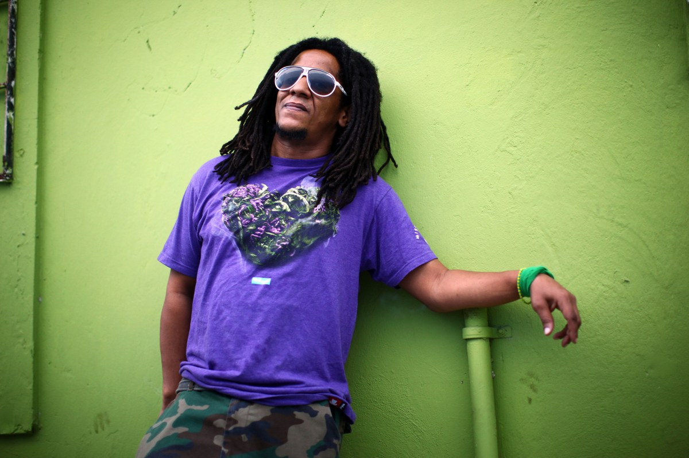

MUS 302 · What to Listen for in Music
Module 3: Latin Diasporic Traditions · Listening Guide · Track 5 of 5
Track 5 Tego Calderón, "Pa' Que Retozen" (2002)

Context
Tego before the song: Santurce, Loíza, the Escuela Libre de Música, the Miami years
Tegui Rosario was born September 1, 1972 in , the densely populated working-class district of San Juan that has been the home of generations of Puerto Rican musicians. He grew up in Río Grande and Carolina, the municipalities just east of San Juan on the road toward , the town with the highest concentration of Afro-Puerto Rican residents on the island and the surviving center of , the island's oldest African-derived drum-and-dance tradition. His father, Esteban Calderón Ilarraza, worked for the Puerto Rico Department of Health and was a serious music listener; his mother, Pilar Rosario Parrilla, was a schoolteacher; his older sister Kenya would later manage his career. The family's musical world ran on the records his father played at home: above all, the salsa-and-bomba singer from Santurce whose 1975 song "Las Caras Lindas (de mi gente negra)" is one of the foundational documents of Afro-Puerto Rican musical pride, plus a steady supply of Latin jazz and what Tego has called "envelope-pushing Latin pop." His grandmother gave him the nickname El Abayarde, Spanish for "fire ant," a name about being small and underestimated and biting harder than expected.
He learned bongo and as a child and attended the , the public conservatory in San Juan, with a percussion concentration. The Escuela Libre training in Puerto Rican traditional music (bomba, , percussion) is part of what later allowed Tego to bring those forms into his reggaeton with the working knowledge of a trained musician rather than as quotation. In the late 1980s the family moved to Miami, where Tego attended Miami Beach Senior High and absorbed the American hip hop that was reaching its first political peak: 's It Takes a Nation of Millions to Hold Us Back in 1988, 's Straight Outta Compton the same year. He would later say that the Miami years were when American racism became visible to him in a way it had not been on the island, and when the politically explicit Black hip hop of the late 1980s gave him a vocabulary for what he was seeing.
Back in Puerto Rico in the early 1990s, Tego paid his music school tuition by playing in a rock band on the side and absorbed Jamaican performers like Buju Banton, Super Cat, and Ninja Man through the same Caribbean radio infrastructure that fed the underground reggaeton scene. The pivotal local model was the Brooklyn-born, Puerto-Rico-raised rapper , who had been making the case since the late 1980s that could be done in Spanish without simply translating English-language conventions. Tego has named Vico C repeatedly as the figure who showed him the form was possible. He started making appearances on other rappers' albums in the late 1990s and was given his most consequential early visibility by the Puerto Rican rapper , who featured him on the 2000 album El Terrorista de la Lírica. By 2001 he had signed with the new independent Puerto Rican label White Lion Records, and he was preparing his first album.
What reggaeton was in 2002: from Panamanian reggae en español to the PR mixtape underground
The framing reading worked through the institutional history of in some detail, and the listening guide assumes you have read it; what is worth recalling here is the immediate pre-history of the moment Tego was preparing to step into. Reggaeton as a named genre coalesced in Puerto Rico in the 1990s out of three streams. The first was Panamanian reggae en español, the Spanish-language adaptation of Jamaican dancehall that Afro-Panamanian artists like , Renato, and Nando Boom had been producing since the late 1980s, building on the long Afro-Antillean Panamanian community whose families had come to work on the Panama Canal. The second was American hip hop, which arrived in Puerto Rico through US radio, US television, and the circular migration between the island and the Puerto Rican neighborhoods of New York. The third was the PR underground itself: the mixtape scene of the early-to-mid-1990s, sold from car trunks and at record stores in San Juan, where producers like , DJ Negro, and DJ Nelson built the dembow-driven sound that would become reggaeton's signature. The young Daddy Yankee got his first visibility on Playero's Playero 37 mixtape in 1992; the underground scene that came to be called simply underground ran its own informal circulation network entirely outside major-label distribution.
That underground was actively criminalized through the 1990s. The Puerto Rican police and National Guard confiscated reggaeton tapes and CDs from record stores under penal obscenity codes; schools banned hip hop clothing. In 2002, the same year Tego was finishing , the Popular Democratic Party senator launched the Anti-Pornography Campaign, a sustained legislative and police effort to remove from Puerto Rican television and radio any reggaeton videos or lyrics deemed sexually explicit. The central target was , the partnered grinding dance that had become reggaeton's signature club form. Scholars including Petra Rivera-Rideau have argued, persuasively, that the campaign was as much about the racial coding of Black Puerto Rican youth as about the explicit content per se: perreo, performed by working-class Black women in clubs and music videos, was being read by middle-class Puerto Rican respectability politics as a threat that needed to be contained. The campaign coincided exactly with the moment reggaeton was about to break commercially, and in some ways accelerated that break by giving the genre the coverage of a censorship controversy.
The recording: White Lion, DJ Joe, the album that brought reggaeton aboveground
El Abayarde was released on November 1, 2002 on , the independent Puerto Rican label founded by the producer , who served as the album's executive producer. The album was nineteen tracks long, ran 57 minutes 32 seconds, and was produced by a rotating cast of the leading PR reggaeton beat-makers of the moment: Luny Tunes, DJ Nelson, Maestro, Rafy Mercenario, DJ Adam, Echo, Coo-kee, and the producer credited on this track, . The album sold 50,000 copies in its first week between Puerto Rico and the US Latin market and broke the sales record for a reggaeton CD's debut. In June 2003, BMG U.S. Latin and Sony BMG re-released it internationally with a wider distribution footprint, where it would eventually sell 132,000 copies in the US and more than 350,000 worldwide and be nominated for the 2003 Latin Grammy for Best Rap/Hip Hop Album. The album that took reggaeton out of the underground was not a compromise; Tego specifically declined to soften the album's politics or its Black Puerto Rican focus to court a wider audience.
"Pa' Que Retozen" was the album's third single and its biggest hit. The song was produced by DJ Joe, with co-credited; Tego himself names both producers in the opening seconds of the track ("Tego Calde con DJ Joe… Junto a DJ Joe y Rafy Mercenario"). The runtime is 2:32, which is a short hip-hop-single length and not an album track's length: the song is built as a club weapon, a flex-and-make-the-room-move track, and it does not waste time getting there. The lyrics are about Tego himself and the bodies on the dance floor: "esto es para ustedes / pa' que se lo gocen / Tego Calderón, pa' que retocen" ("this is for you all / so you can enjoy yourselves / Tego Calderón, so you can frolic"). The song's thematics are dance and bravado; the album as a whole carries the politically substantive material (the bomba interlude with Don Félix Alduen, the title track on Black Puerto Rican identity, the anti-colonial verses) that Tego is most often discussed for. It is worth being honest about that division of labor on the record: "Pa' Que Retozen" is the doorway, the album is the room. It is also worth noticing that the doorway is unmistakably a Black Caribbean doorway, regardless of what the lyrics are about — the dembow, the percussion, the rasp of Tego's voice, the codeswitching between US Black English and Puerto Rican Spanish all do political work that the lyrics do not have to.
The recording is in C-sharp minor. The is 4/4. The is around 92 at the half-time count, or 184 BPM at the double-time count: which way you count it depends on whether you are following the bass-and-kick or the snare-and-hi-hat layer, and reggaeton routinely lives in this kind of metric ambiguity. The track is built on the riddim, the boom-ch-boom-chick pattern that Bobby "Digital" Dixon built for Shabba Ranks's 1990 dancehall single "Dem Bow" and that Panamanian and Puerto Rican producers have been adapting ever since. Once you hear the dembow you hear it everywhere in the genre; "Pa' Que Retozen" is one of its cleanest expressions on a 2002 commercial recording. The vocal is Tego alone, no chorus, no guest verse, with the producers' tag and a few sampled drops as the only other voices on the track.
Reception, the international re-release, and the long afterlife
"Pa' Que Retozen" was a hit in Puerto Rico immediately. After the BMG/Sony BMG international re-release in summer 2003, it became one of the songs that brought reggaeton to a US Latin market that had mostly been hearing salsa, , and to that point. Tego headlined Madison Square Garden in August 2003 — the New York Times, reviewing the show, called him "the most forward-looking performer" on the bill — and returned to the Garden as the headliner of the Megatón 2004 event, by which time attendance had grown from 12,000 to a sold-out 20,000. El Abayarde, along with 's 2004 Barrio Fino, Ivy Queen's Diva, and Don Omar's The Last Don, is one of the four albums most often credited with internationalizing reggaeton; "Gasolina," from Barrio Fino, was the genre's first true global mainstream pop hit in 2004 and 2005. In 2005 Tego signed a partnership between his own label and Atlantic Records, the first reggaeton artist to have a deal with a US major.
The afterlife of "Pa' Que Retozen" specifically has been remarkable. The track has been streamed almost five hundred million times on YouTube as of this writing (the official upload via the Tego Calderón Topic channel had passed 489 million views in early 2026). It has been covered by KYEN?ES? and DJ Nelson on a 2021 reissue project. Ivy Queen sampled the song in her track "787." In 2023, more than two decades after the original recording, sampled the song's chorus on "FINA," from his album Nadie Sabe Lo Que Va a Pasar Mañana, foregrounding the sample at the 1:31 mark and putting the 2002 Tego original back into the contemporary reggaeton mainstream the genre's biggest 2020s star was building. Tego has continued to record (the 2015 album El Que Sabe, Sabe won the Latin Grammy for Best Urban Music Album), and has split the rest of his career between music, acting (the Fast and the Furious franchise), and the political and community work in Loíza and Santurce that the music has always pointed toward. The 2002 single is the recording that all of that comes after.
Things to listen for
The recording is in C-sharp minor and 4/4 at roughly 92 BPM (or 184 BPM at the double-time count, depending on which layer you are following). Total runtime 2:32. The harmonic budget is essentially one chord, the way most reggaeton, like much and much salsa , lives on a small harmonic palette and builds energy from rhythm and ensemble rather than from chord changes. The texture is sparser than any other recording in this module: this is not a twenty-piece orchestra (Puente), a nine-piece Latin soul band (), a seven-piece rock band (), or a band with , , and lead guitar (). It is a dembow programmed beat, a few melodic samples, and Tego's voice. Almost everything is rhythmic, almost nothing is sustained.
First, the dembow itself. Listen for the boom-ch-boom-chick pattern that runs through the entire track: a kick drum on beat 1 and the between beats 1 and 2, a snare or rim on beats 2 and 4, hi-hats subdividing the eighth notes between. This is the rhythmic skeleton of essentially all reggaeton, and "Pa' Que Retozen" is one of the cleaner mid-2000s commercial expressions of it. Compare the dembow to the rhythm of Track 1 (Puente), which is also in 4/4 and also lives on a small harmonic palette but organizes its rhythm around a Cuban rather than a Jamaican-derived dembow. Both are dance rhythms; both are doing structural work that is essentially independent of the lyrics or the harmony. But they belong to different Black Caribbean traditions and they sound nothing alike.
Second, the timbre of Tego's voice. Tego raps in a low, slow, gravelly drawl, with the consonants close together and the cadence slightly behind the beat. The voice is unmistakably his and unmistakably Caribbean: the speech rhythm is Puerto Rican Spanish (the soft r, the dropped s at the ends of syllables, the rhythmic stress patterns of San Juan street speech) and the vocal placement is closer to a dancehall toaster than to a US East Coast hip hop . Compare the voice with 's voice on "The Message" (1982): both are talking over a sparse rhythm-only track, both are using the speech rhythm of an urban vernacular, but Mel is in Black New York English on a 4/4 funk-derived beat and Tego is in PR Spanish on a Jamaican-derived dembow. The two recordings are doing related work — the rapping voice as the load-bearing element of an otherwise spare track — in different Black Atlantic dialects of the form.
Third, the producers' tag. Listen to the opening twelve seconds of the track. Tego announces himself ("este es Tego Calderón, el Abayarde"), then names his producers ("junto a DJ Joe y Rafy Mercenario"), then drops the line that gives the track its title ("metiéndole cabrón en el microphone, pa' que se lo gocen y pa' que retocen"). The tag is doing work: it credits the beat-makers, it claims the track for Tego personally as a single (rather than as a collective genre product), and it codeswitches between Spanish ("metiéndole cabrón") and Black Caribbean / English-influenced phrasing ("microphone"). The codeswitch is a recurring feature of Tego's vocal — listen through the whole track and notice how often he drops English words or English-influenced phrasings into Spanish syntax. The bilingual texture is part of the song's Caribbean-American argument: Tego is rapping from inside the same Spanish-English diglossia that Joe Bataan was working in thirty-five years earlier on "Gypsy Woman," just on a different rhythmic base and from a different generation's vantage point.
Fourth, the relationship to the album's broader politics. "Pa' Que Retozen" is a club track and its lyrics are about flex and dance, not about Loíza or Black Puerto Rican identity or anti-colonial politics. The political weight of El Abayarde sits elsewhere on the record: in the bomba interlude with the elder Afro-Puerto Rican musician Don Félix Alduen ("Oí Una Voz Y Me Le Da Memoria") that explodes out of the album's sixth track, in the title track's invocation of the fire-ant nickname as a Black-pride statement, in the closing tracks' anti-colonial verses. But "Pa' Que Retozen" is the track that got Tego on the radio and the album into 350,000 listeners' hands; the political album's commercial doorway is a club hit. That is its own kind of political form: the dembow as a Black Caribbean rhythm carrying mainstream commercial weight in a US market that had not yet learned to hear Spanish-language Black music as Top 40 product. By 2024, Bad Bunny would be the world's most-streamed artist with a catalog built directly on the ground Tego helped clear; the path runs straight through this 2002 single.
Reflective question
"Pa' Que Retozen" is sparser than any other recording in this module. The Puente track has twenty musicians; the Bataan track has nine; the Santana track has seven; the Selena track has a full Tejano cumbia band with synth, drum machine, and lead guitar. "Pa' Que Retozen" is a dembow program, a few samples, and Tego's voice — and it is the most-streamed track in the module by an enormous margin (489 million YouTube views, against tens of millions for the others). What changed between 1962 and 2002 in the relationship between texture and reach? How much of "Pa' Que Retozen"'s sparseness is musical aesthetics, how much is commercial radio's appetite for a hip-hop-length single, and how much is the technical and economic infrastructure (digital production, mixtape distribution, streaming-era amplification) that made a one-rapper-and-a-beat track viable as a global Latin pop product? And what does the four-decade arc from a twenty-piece Cuban orchestra in midtown Manhattan to a one-rapper-and-a-beat track in Santurce tell you about the changing politics of who gets to make Latin popular music and how it gets to circulate?
Sources for this section
Encyclopedia.com, "Calderón, Tego" (Contemporary Hispanic Biography); IMDb, Tego Calderón biography; Latinolife, "Reggaeton Legends: Tego Calderón"; Yo Soy Borinquen, "Tego Calderón." Sources for the biographical detail (born September 1, 1972 in Santurce; raised in Río Grande and Carolina near Loíza; father Esteban Calderón Ilarraza in the PR Department of Health; mother Pilar Rosario Parrilla as schoolteacher; sister Kenya as manager; childhood exposure to Ismael Rivera and Latin jazz; the Escuela Libre de Música percussion training; the late-1980s family move to Miami; Miami Beach Senior High; the Public Enemy and N.W.A. influence; the return to Puerto Rico and the rock-band day job; the Vico C credit; the Eddie Dee feature on El Terrorista de la Lírica in 2000).
"El Abayarde." Wikipedia, accessed 2026; "El Abayarde." Grokipedia, accessed 2026; Apple Music, "El Abayarde" by Tego Calderón; MusicBrainz release entry for the BMG U.S. Latin / NuLife / White Lion Records 2003-06-17 international re-release; Discogs entries for the 2002 White Lion first press and the 2003 BMG re-press. Sources for the album's release history (November 1, 2002 original PR release on White Lion Records; June 17, 2003 international re-release on BMG U.S. Latin / Sony BMG; 50,000 first-week sales; 132,000 US copies, 350,000+ worldwide; nineteen tracks, 57:32 runtime; producers including Luny Tunes, DJ Nelson, Maestro, Rafy Mercenario, DJ Joe, DJ Adam, Echo, Coo-kee; executive producer Elías De León; 2003 Latin Grammy Best Rap/Hip Hop Album nomination).
WhoSampled, "Pa' Que Retozen" by Tego Calderón (production credits, samples, covers). Source for DJ Joe as the lead producer, the Bad Bunny "FINA" 2023 sample at 1:31, the Ivy Queen "787" sample, and the KYEN?ES? and DJ Nelson 2021 cover.
YouTube, "Pa' Que Retozen" (Tego Calderón - Topic, uploaded 2015-02-21, ℗ 2003 Jiggiri Records, Inc.). Source for the recording's runtime (2:32), the producer credits as named on the record, and the YouTube view count (489 million as of early 2026).
SongBPM, "Pa' Que Retozen" by Tego Calderón; GetSongBPM; Tunebat; Gemtracks. Sources for the technical music-theory parameters (C-sharp minor, 91-92 BPM half-time / 184 BPM double-time, 4/4 meter).
Letras.com, "Pa' Que Retozen" lyrics. Source for the opening tag ("Tego Calde con DJ Joe… Junto a DJ Joe y Rafy Mercenario") and the chorus refrain ("esto es para ustedes / pa' que se lo gocen / Tego Calderón, pa' que retocen").
Rivera-Rideau, Petra R. Remixing Reggaetón: The Cultural Politics of Race in Puerto Rico. Durham, NC: Duke University Press, 2015. The standard scholarly account of the racial politics of reggaeton in Puerto Rico, including the chapter "The Perils of Perreo" on the 2002 Velda González Anti-Pornography Campaign.
Marshall, Wayne; Rivera, Raquel Z.; and Pacini Hernandez, Deborah, editors. Reggaeton. Durham, NC: Duke University Press, 2009. The foundational scholarly anthology on the genre, covering the Panamanian roots, the Puerto Rican underground, and the dembow rhythm.
"Reggaeton." Wikipedia, accessed 2026; LatinX Project at NYU, "Reggaeton Feminista: Perreo as a Tool for Self-Empowerment," 2023. Sources for the underground PR mixtape scene of the 1990s (DJ Playero, DJ Negro, DJ Nelson; Playero 37 introducing Daddy Yankee in 1992); the police confiscations of mixtapes under penal obscenity codes; the 2002 Anti-Pornography Campaign and DJ Playero's home raid; the dembow riddim's Shabba Ranks "Dem Bow" 1990 origin via Bobby "Digital" Dixon.
"Black, Puerto Rican And Proud: Guest DJ Tego Calderón." Alt.Latino, NPR, May 20, 2013; Garsd, Jasmine. "Las Caras Lindas: To Be Black And Puerto Rican In 2013." Code Switch, NPR, May 25, 2013; Greene, David. "Puerto Rican Hip-Hop Icon Tego Calderon Mixes Prose And Politics." Morning Edition, NPR, February 8, 2013. Sources for the description of Tego's studio El Sitio in Santurce, the wallpapering of the studio with photographs of Ismael Rivera, Tego's positions on Puerto Rican independence, and the source photograph used at the top of this listening guide (Coburn Dukehart for NPR, taken outside El Sitio).
Cepeda, Eddie. "Tu Pum Pum: Panamanian Artists Helped Birth Reggaeton, Then the Industry Left Them Behind." Remezcla, 2017. Source for the Panamanian reggae en español prehistory, El General and Renato as foundational figures, and the way the Puerto Rican reggaeton industry that emerged in the 2000s did not always credit the Panamanian artists whose work it was building on.
"Tego Calderón ‘El Abayarde’ 20th Anniversary." Rolling Stone, November 1, 2022. Source for the album's cultural reception, the description of the bomba interlude with Don Félix Alduen, and the album's ongoing significance two decades after release.